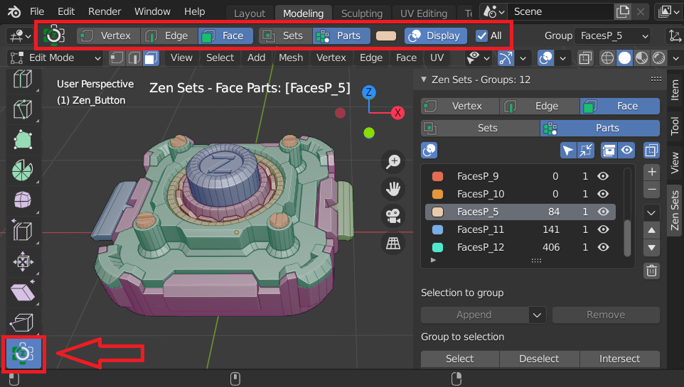
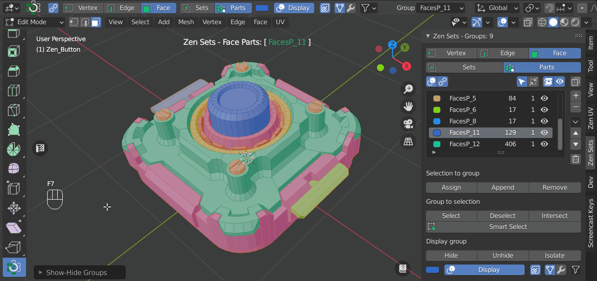
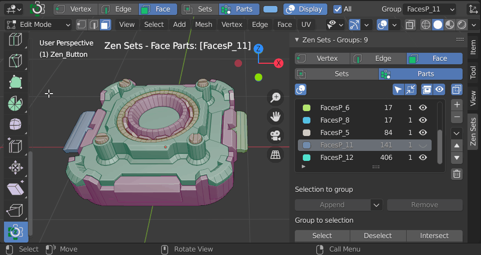
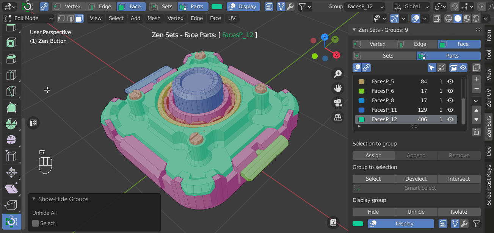
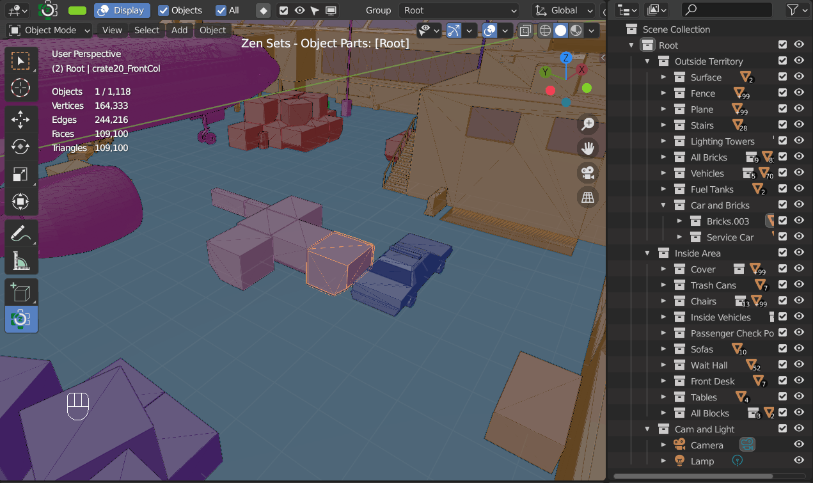

Zen Sets View3D Workspace Tool
Zen Sets Tool is used to work with Zen Sets Groups directly on the surface of your model.

Show Only One Group
Press CTRL+SHIFT and click on the mesh where that group is.
Show All Groups
Press CTRL+SHIFT and click outside of the mesh.

Invert Your Current Group Selection
Press CTRL+SHIFT then click and drag outside of the mesh.

Select More Than One Group
- Press
CTRL+SHIFTandclickon the mesh where one group is - Invert that selection: press
CTRL+SHIFTthenclick and dragoutside of the mesh - Press
CTRL+SHIFTandclickon the other groups you want to select - Invert this selection: press
CTRL+SHIFTthenclick and dragoutside the model

Object Mode
Collection Toolbar
-
Quick collection toolbar with the options to append-remove object, toggle hide, select, exclude, disable
-
Mouse operations to isolate, unhide, invert object selection

Collection Selector
Next Collection - Ctrl + Mouse Wheel
Changes active Collection to the next in the list of all Collections and starts from the first when reaches the end.

Next Selected Object Collection - Ctrl + Shift + Mouse Wheel
Changes active Collection to the next in the list of all Selected Object Collections and starts from the first when reaches the end.
